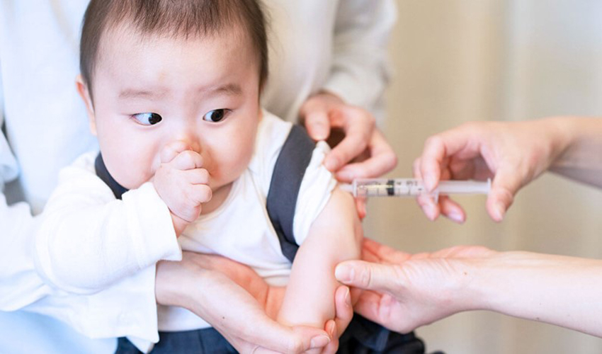

月號－哺乳育嬰站
月號－哺乳育嬰站感染日本腦炎病毒大部分無明顯症狀，約有小於1%的感染者會出現臨床症狀，最常見的臨床表現是急性腦炎。由於各個年齡層都有感染日本腦炎的風險，因此須提高警覺。而預防日本腦炎最有效的方法就是接種疫苗，其中幼兒也是施打對象。 根據疾病管制署監測資料顯示，截至6月13日，今年共有3例日本腦炎確定病例，分別為高雄市2例及花蓮縣1例。傳染病防治醫療網東區副指揮官、花蓮慈濟醫院重症加護內科主任陳逸婷表示，根據疾管署統計，每年5至10月為日本腦炎流行季，其中6至7月為流行高峰，而且日本腦炎的致死率約20至30％，存活病例中，約30%至50％有神經性或精神性後遺症，呼籲大家一定要多加注意防範。 |
|  |
| 臨床症狀不明顯 幼兒施打疫苗防嚴重後遺症 |
陳逸婷表示，第3例個案是五十多歲的男性，從急診就醫時就開始出現有發燒、頭痛、說話說不清楚、意識改變等腦炎、腦膜炎的症狀，問診時發現，病人住家附近有水稻田及溝渠等高風險場所，而且常有許多蚊蟲，在初步排除 COVID-19、流感等可能性後，醫療團隊在病人的腦脊髓液檢查中，發現有病毒性腦炎的感染，再進一步檢驗，確定是罹患了日本腦炎。 大部分感染日本腦炎的病人，不會有明顯的臨床症狀，所以，增加了醫療診斷及民眾自覺的困難度。陳逸婷主任提醒，各個年齡層都有感染日本腦炎的風險，請大家要提高警覺，如果發現有發燒、頭痛、甚至痛到嘔吐、講話邏輯混亂的時候，就要盡快就醫，而預防日本腦炎最有效的方法為接種日本腦炎疫苗。 幼兒常規接種時程為出生滿15個月接種第1劑，間隔12個月接種第2劑。陳逸婷主任呼籲，請家長帶家中適齡幼兒至各地衛生所或合約院所接種疫苗，以避免因感染衍生嚴重後遺症。 |

|
| 清晨和黃昏是叮咬高峰期 穿著淺色衣褲加防蚊液保護 |
日本腦炎是感染日本腦炎病毒所引起的急性腦膜腦炎，受損部位包括腦、脊髓及腦膜。日本腦炎的傳播須經由具有感染力的病媒蚊叮咬，人不會直接傳染給人，台灣以三斑家蚊、環紋家蚊及白頭家蚊為主要的傳播媒介，病媒蚊一天中叮咬人的高峰期約在清晨和黃昏的時候。 住家或活動地鄰近豬舍、農田等高風險環境的民眾應落實防蚊，可穿著淺色長袖衣褲，配合使用政府機關核可的防蚊藥劑，尤其在清晨與黃昏等病媒蚊吸血高峰時期，請儘量避免到病媒蚊高風險環境附近活動，如果自覺有感染風險的成人，也可以到醫院評估自費接種疫苗。 |
| 資料來源 致死率達 2 至 3 成！六、七月日本腦炎高峰期 醫籲適齡幼兒當接種疫苗- Heho親子 |